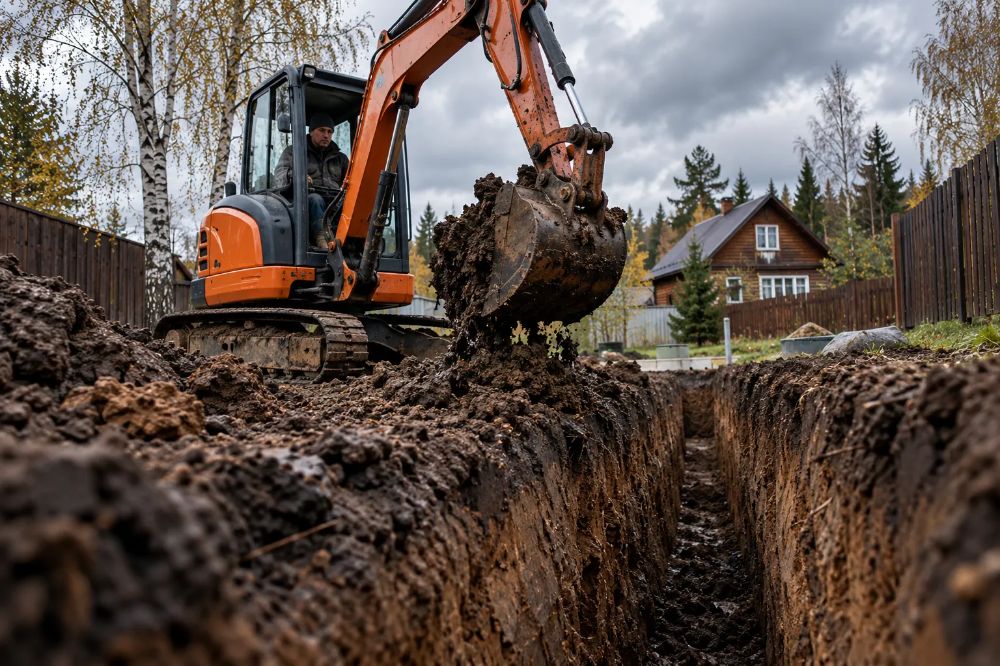
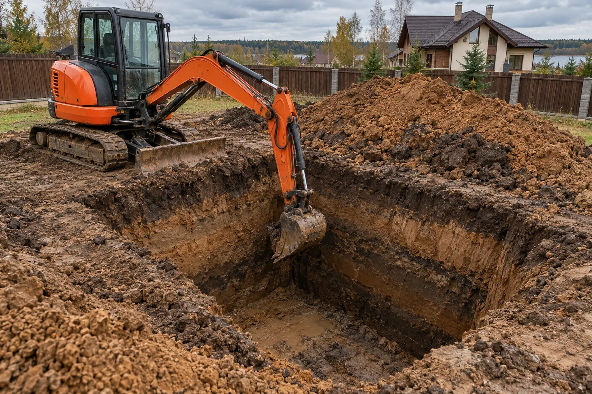
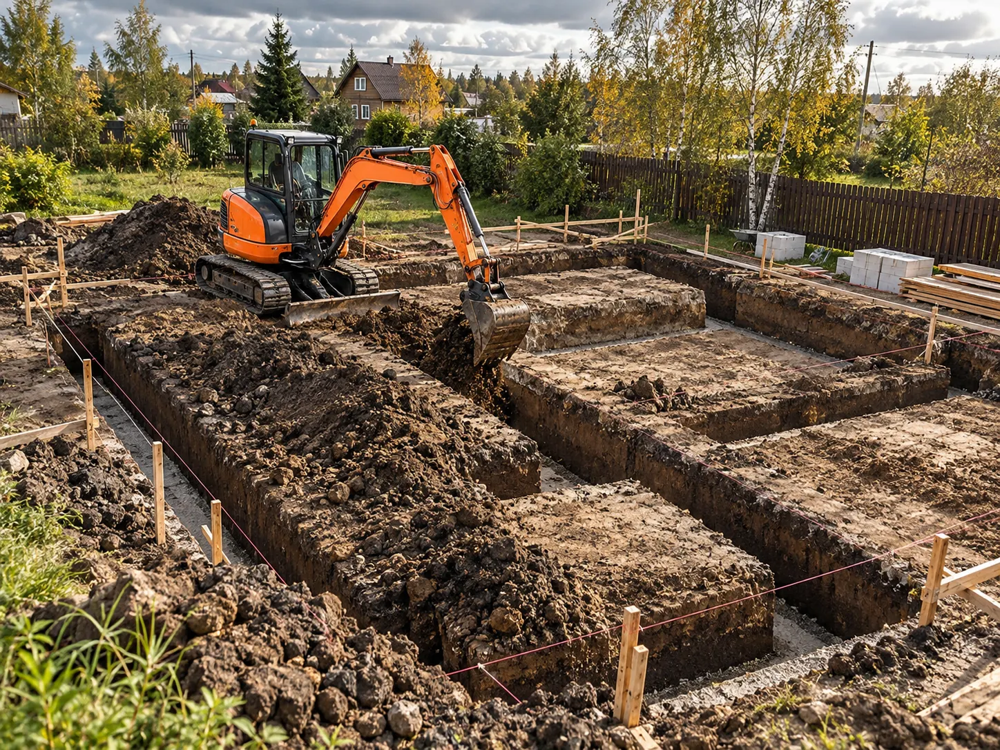
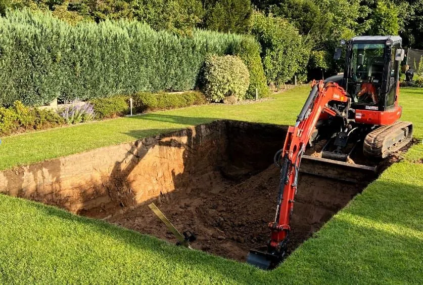
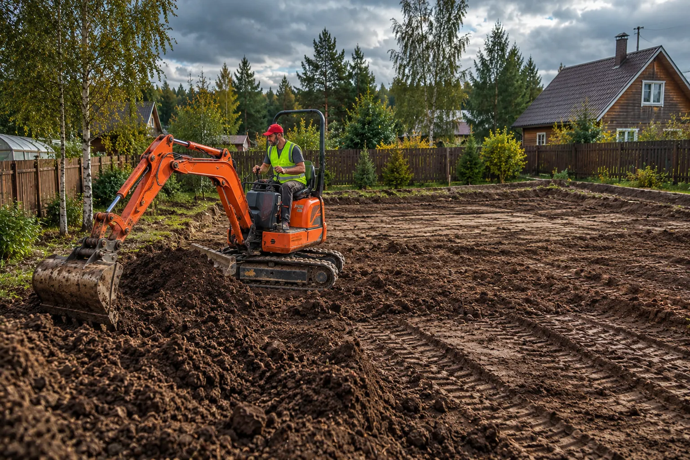
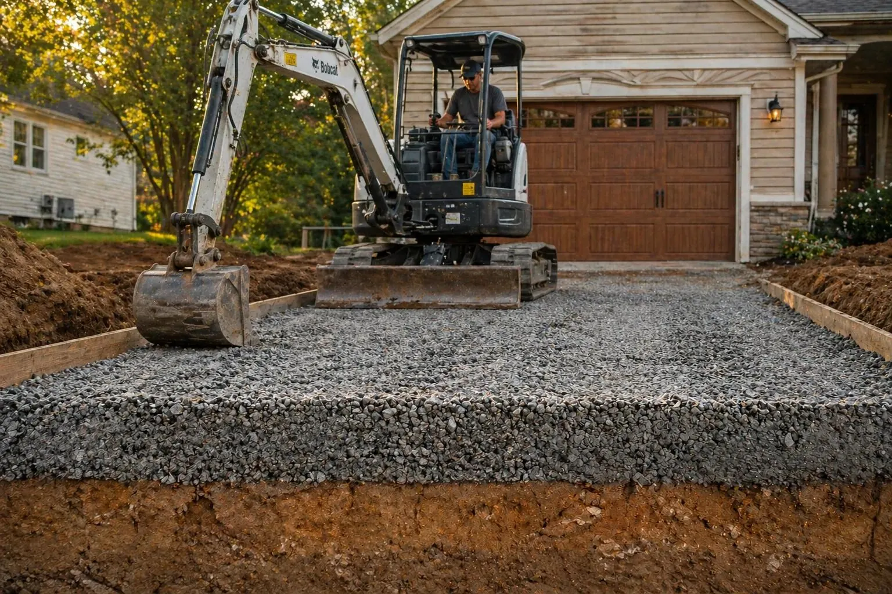

/ коммуникации
Траншеи под коммуникации
Под воду, канализацию, кабель и полив на частном участке.
Подробнее ↗Мини-экскаватор для точечных задач в Истре и населённых пунктах округа. Уточняем реальные условия до согласования работы.

Конкретный состав работ зависит от техники, грунта, доступа и документации.

Под воду, канализацию, кабель и полив на частном участке.
Подробнее ↗
Под септик, станцию очистки, кольца и накопительную ёмкость.
Подробнее ↗
Под ленту, плиту, дом, баню или хозяйственную постройку.
Подробнее ↗
Под заглублённый бассейн, купель или небольшой пруд.
Подробнее ↗

Снять верхний слой, перераспределить грунт и подготовить площадку.
Подробнее ↗
Выемка грунта под въезд, парковочное место, дорожки и мощение.
Подробнее ↗
Другие задачи: обратная засыпка, технические приямки, перемещение грунта и небольшие водоёмы — по согласованию после оценки техники и доступа.
Пришлите фотографии и схему с примерными размерами. Проверим, подходит ли мини-экскаватор.
Описать задачу ↗Место, примерные размеры и несколько фотографий участка помогут понять объём работ и условия подъезда. Стоимость обсуждаем после уточнения деталей.